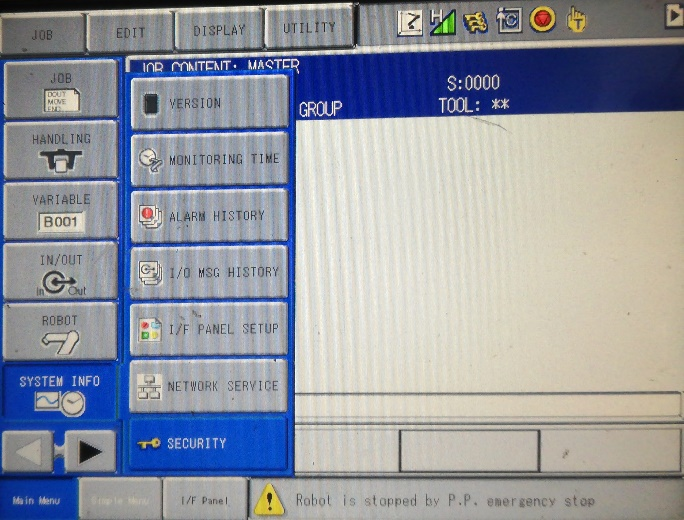
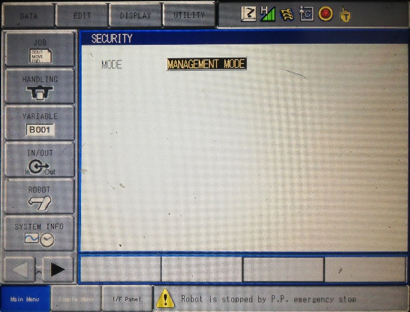
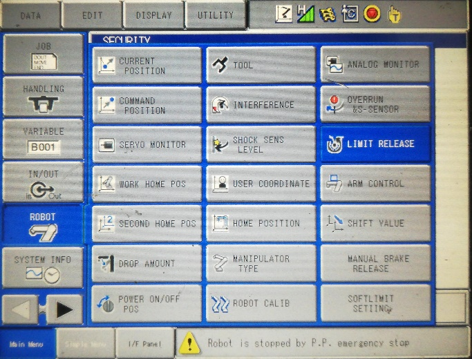
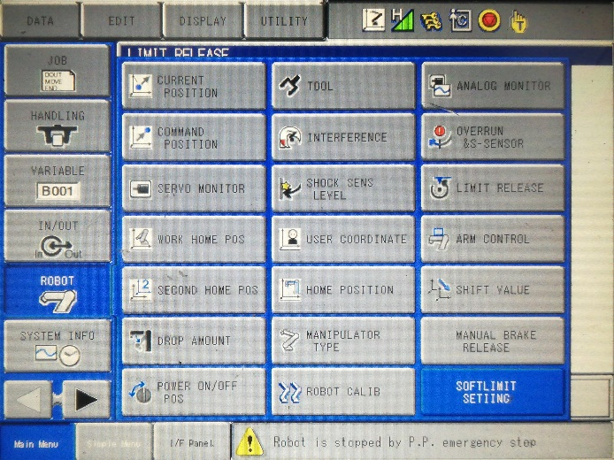
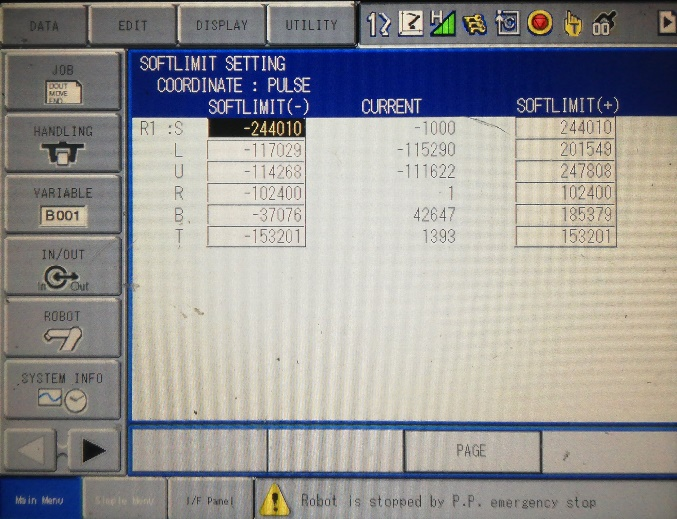
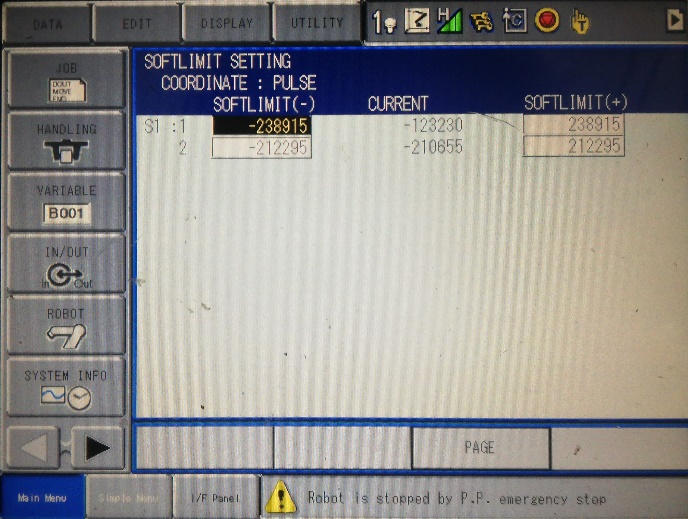
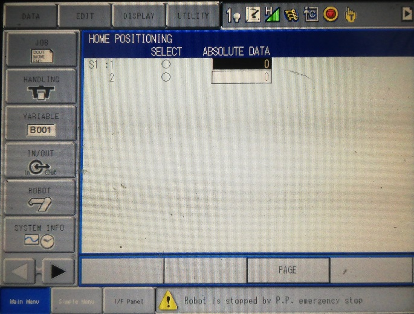
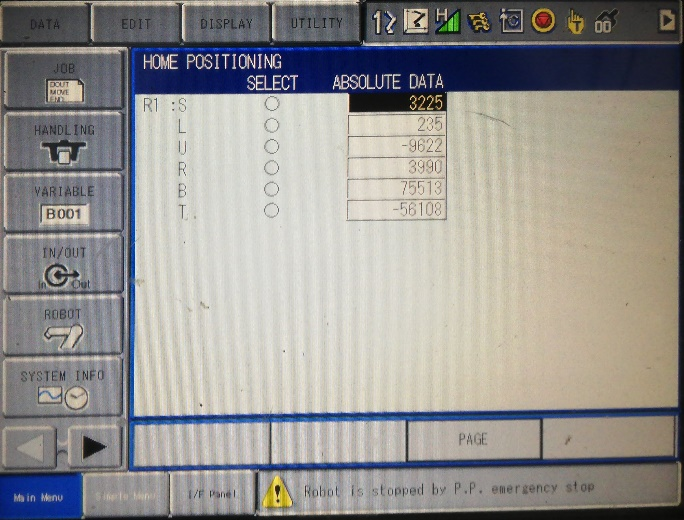

Check position on [R1S1]¶
Además de esta advertencia, el robot no realizaba los movimientos a las posiciones predeterminadas (Second Home Position y Work Home Position) como tampoco encontrar las soluciones de trayectoria a las posiciones enviadas desde ROS.
Para solucionar este problema revisara que el reconocimiento de los Softlimits estuviese activado, como que los valores de estos y de la posición de HOME fueran los correctos siguiendo el procedimiento mostrado a continuación.
Opción de seguridad
Opción de entrada a modo mantenimiento
Una vez se selecciona, pedirá una contraseña de seguridad, esta es la que trae por defecto el Robot. En este modo, Se Busca la opción de LIMIT RELEASE, en la pestaña ROBOT del menú principal.
Opción limit release

Validación de valor Invalid
Una vez adentro de esta opción se debe verificar que los 2 ítems que aparecen (SOFT LIMIT RELEASE y ALL LIMIT RELEASE) tengan el valor de INVALID, este valor define si se ignoraran o no los valores de los Softlimits con el riesgo que el ROBOT sufra una colisión con él mismo. Después de esto, en la misma pestaña ROBOT, se selecciona la opción SOFTLIMIT SETTING. Aquí se encontrarán los valores por de los SOFTLIMITS. No se deben cambiar estos valores a menos que se tenga claridad de que se está haciendo.
Opción Soft limit setiing
Una vez aquí verificamos que los límites de todas las juntas sean los siguientes:
Verificación de límites de página 1 (primeros 6 grados de libertad)
Verificación de límites de página 2 (últimos 2 grados de libertad)
Como paso final se ingresa a la opción HOME POSITION en la pestaña ROBOT del menú principal , aquí se verán los valores por defecto de la posición de Home del robot , estos valores son muy importantes por que es desde estos es que el robot ubica todos sus límites. Los Valores de HOME deben ser los siguientes:
Verificación valores de HOME (1).
Verificación valores de HOME (2).